토목기사 (2006-09-10 기출문제)
1과목: 응용역학
1. 길이가 L인 양단 고정보 AB의 왼쪽 지점이 그림과 같이 적은 각 θ만큼 회전할 때 생기는 반력을 구한 값은?
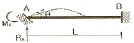
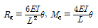
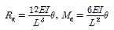
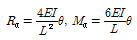
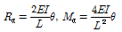
(정답률: 알수없음)

2. 다음 그림과 같이 캔틸레버보 ①과 ②가 서로 직각으로 자유단이 겹쳐진 상태에서 자유단에 하중 P를 받고 있다. ℓ1이 ℓ2보다 2배 길고, 두 보의 EI는 일정하며 서로 같다면 짧은 보는 긴 보 보다 몇 배의 하중을 더 받는가?
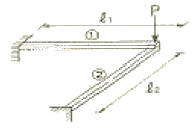
- 2배
- 4배
- 6배
- 8배
(정답률: 알수없음)
3. 다음 그림과 같은 트러스에서 AC의 부재력은?
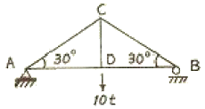
- 인장 10t
- 인장 15t
- 압축 5t
- 압축 10t
(정답률: 67%)
4. 다음 그림에서 보이는 바와 같은 3활절(三滑節)아치의 C점에 연직하중 P=40t이 작용한다면 A점에 작용하는 수평반력 HA는?
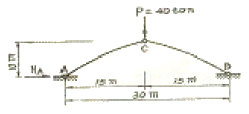
- HA=10t
- HA=15t
- HA=20t
- HA=30t
(정답률: 알수없음)
5. 다음 그림의 부정정보에서 B점의 반력 크기는?
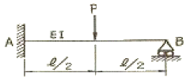
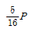
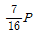
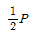
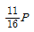
(정답률: 29%)
6. 다음 정정보에서 전단력도(SFD)가 옳게 그려진 것은?
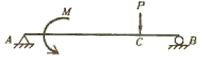
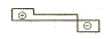
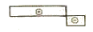
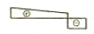
(정답률: 55%)
7. 다음 단면에서 y축에 대한 회전반지름은?
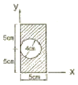
- 3.07cm
- 3.20cm
- 3.81cm
- 4.24cm
(정답률: 50%)
8. 그림과 같이 케이블(cable)에 500kg의 추가 매달려 있다. 이 추의 중심선이 구멍의 중심축 상에 있게 하려면 A점에 작용할 수평력 P의 크기는 얼마가 되어야 하는가?
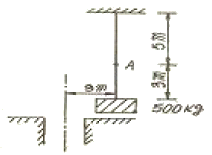
- P=325kg
- P=350kg
- P=375kg
- P=400kg
(정답률: 54%)
9. 기둥의 중심에 축 방향으로 연직 하중 P=120t 이, 기둥의 횡 방향으로 풍하중이 역삼각형 모양으로 분포하여 작용할 때 기둥에 발생하는 최대 압축응력은?
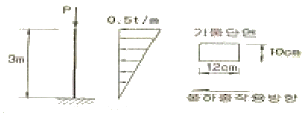
- 375kg/cm2
- 625kg/cm2
- 1,000kg/cm2
- 1,625kg/cm2
(정답률: 10%)
10. 그림과 같은 1부재 트러스의 B에 수평하중 P가 작용한다. B 절점의 수평변위 δB는 몇 m인가? (단, EA는 두 부재가 모두 같다.)
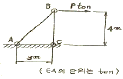
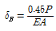
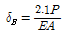
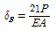
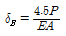
(정답률: 60%)
11. 그림과 같은 구조물에 하중 W가 작용할 때 P의 크기는? 9단, 0°<α<180°이다.)
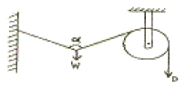
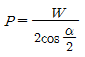
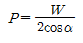
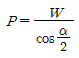
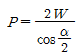
(정답률: 54%)
12. 재료의 단면적과 길이가 서로 같은 장주에서 양단힌지 기둥의 좌굴하중과 양단고정 기둥의 좌굴하중과의 비는?
- 1:16
- 1:8
- 1:4
- 1:2
(정답률: 알수없음)
13. 다음 그림과 같은 양단 고정 보에서 중앙점의 휨모멘트는?
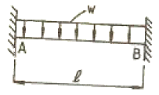
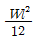
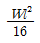
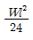
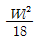
(정답률: 알수없음)
14. 그림과 같은 보에서 CD 구간의 곡률반경(曲律半徑)은 얼마인가? (단, 이 보의 휨강도 EI=3,800tㆍm2이다.)
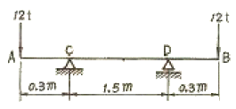
- 924m
- 1,⑤6m
- 1,174m
- 1,283m
(정답률: 알수없음)
15. 휨강성이 EI인 프레임의 C점의 수직처럼 δc를 구하면?
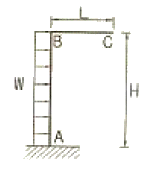
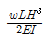
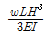
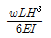
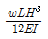
(정답률: 42%)
16. 다음 1/4원의 도심축 xo-xo에 대한 단면 2차 모멘트 Ixo는 얼마인가?
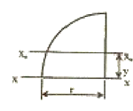
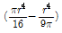
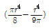
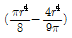
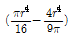
(정답률: 42%)
17. 지간이 ℓ인 단순보 위를 그림과 같이 이동하중이 통과할 때 지점 B로부터 절대 최대 휨모멘트가 일어나는 위치는?
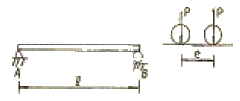
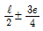
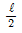
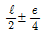
(정답률: 알수없음)
18. 다음 구조물에 작용하는 최대 인장응력은?
- 469 kg/cm2
- 833 kg/cm2
- 937 kg/cm2
- 1,667 kg/cm2
(정답률: 알수없음)
19. 어떤 한 요소가 x방향 응력 σx=876kg/cm2, y방향 응력 σu=1,154kg/cm2의 이축응력 상태에 있다. 이 요소의 체적변형률은 얼마인가? (단, 이 요소의 프와송비 : 0.3, 탄성계수 : 2×104kg/cm2)
- 2.08×10-4
- 2.74×10-4
- 3.40×10-4
- 4.06×10-4
(정답률: 25%)
20. 균질한 균일 단면봉이 그림과 같이 P1, P2, P3의 하중을 B, C, D점에서 받고 있다. 각 구간의 거리 a=1.0m, b=0.4m, c=0.6m이고 P2=10t, P3=5t의 하중이 작용할 때 D점에서의 수직방향 변위가 일어나지 않기 위한 하중 P1은 얼마인가?
- 5t
- 6t
- 8t
- 24t
(정답률: 알수없음)
2과목: 측량학
21. 축척 1/1,500 도면상의 면적을 축척 1/1,000으로 잘못 알고 면적을 측정하여 24,000m2를 얻었을 때 실제 면적은?
- 36,000m2
- 10,667m2
- 54,000m2
- 37,500m2
(정답률: 알수없음)
22. 항공사진의 기복 변위와 관계없는 것은?
- 정사 투영
- 중심 투영
- 지형, 지물의 비고
- 촬영고도
(정답률: 알수없음)
23. 그림과 같은 유심 삼각망의 조정에 사용되는 조건식이 아닌 것은?
- ①+②+⑨-180°=0
- [①+②]-[⑤+⑥]=0
- ⑨+⑩+⑪+⑫-360°=0
- ①+②+③+④+⑤+⑥+⑦+⑧-360°=0
(정답률: 47%)
24. 축척 1/25,000 지형도상에서 거리가 6.73cm인 두 점 사이의 거리를 다름 축척의 지형도에서 측정한 결과 11.21cm이었다. 이 지형도의 축척은 약 얼마인가?
- 1/20,000
- 1/18,000
- 1/15,000
- 1/13,000
(정답률: 알수없음)
25. A, B, C 세 점에서 P점의 높이를 구하기 위해 직접수준측량을 실시하였다. A, B, C 점에서 구한 P점의 높이는 각각 325.13m, 325.19m, 325.02m이고 AP=BP=1km, CP=3km일 때 P점의 표고는 얼마인가?
- 325.08m
- 325.11m
- 325.14m
- 325.21m
(정답률: 50%)
26. 시가지에서 25변형 폐합 다각측량을 한 결과 측각오차가 6‘ 5“이였을 때, 이 오차의 처리는? (단, 시가지에서의 허용 오차: n:변의수)
- 오차를 내각(內角)dml의 크기에 비례하여 배분 조정한다.
- 오차를 변장의 크기에 비례하여 배분 조정한다.
- 오차를 각 내각에 균등배분 조정한다.
- 오차가 너무 크므로 재측(再測)을 하여야 한다.
(정답률: 알수없음)
27. 지형측량을 하려면 기본 삼각점 만 으로는 기준점이 부족하므로 삼각점을 기준으로 하여 지형측량에 필요한 측점을 설치하는데, 이 점을 무엇이라 하는가?
- 도근점
- 이기점
- 방향전환점
- 중간점
(정답률: 34%)
28. 도로의 종단곡선으로 주로 사용되는 곡선은?
- 2차 포물선
- 3차 포물선
- 클로소이드
- 렘니스케이트
(정답률: 39%)
29. 단곡선을 설치하기 위하여 교각(I)=80°를 측정하였다. 외할(E)을 10m로 하고자 할 때 곡선길이 (C, L)는?
- 23m
- 46m
- 74m
- 117m
(정답률: 65%)
30. 다음의 다각 말에서 C점의 좌표는 얼마인가? (단, )
- Xc=-5.31m, Yc=160.45m
- Xc=-1.62m, Yc=170.17m
- Xc=-10.27m, Yc=89.25m
- Xc=50.90m, Yc=86.07m
(정답률: 28%)
31. 다음 중 U.T.M 도법에 대한 설명으로 옳지 않은 것은?
- 중앙 자오선에서 측척 계수는 0.9996이다.
- 좌표계 간격은 경도를 6°씩, 위도는 8°씩 나눈다.
- 우리나라는 51구역(ZONE)과 52구역(ZONE)에 위치하고 있다.
- 경도의 원점은 중앙자오선에 있으며 위도의 원점은 북위 38°이다.
(정답률: 알수없음)
32. 1/1,000축척으로 평판측량을 할 때 추가 측점을 중심으로 최대 몇 cm반경 내에 들어가도록 구심해야 하는가? (단, 도상 제도의 허용 오차는 0.2mm 임)
- 5cm
- 10cm
- 15cm
- 20cm
(정답률: 24%)
33. 노선측량에서 실시설계측량에 해당하지 않는 것은?
- 중심선 설치
- 용지측량
- 지형도작성
- 다각측량
(정답률: 30%)
34. 어느 두 지점 사이의 거리를 A, B, C, D 네 사람이 각각 10회 측정한 결과가 다음과 같다. 가장 신뢰성이 높은 측 정자는 누구인가? (단, 단위는[m])
- A
- B
- C
- D
(정답률: 알수없음)
35. 다음 그림과 같은 편심조정계산에서 T값은? (단, ø=300°, S1=3km, S2=2km, e=0.5m, t=45° 30' S1≒S1',S2≒S2'로 가정할 수 있음)
- 45° 29‘ 40“
- 45° 30‘ ⑤“
- 45° 30‘ 20“
- 45° 31‘ ⑤“
(정답률: 14%)
36. 교호 수준 측량을 하여 다음과 같은 결과를 얻었다, A점의 표고가 120.564m 이면 B점의 표고는?
- 120.800m
- 120.627m
- 120.524m
- 120.328m
(정답률: 19%)
37. 수평 및 수직거리를 동일한 정확도로 관측하여 육면체의 체적을 2,000m3로 구하였다. 체적계산의 오차를 0.5m3이내로 하기위해서는 수평 및 수직거리 관측의 최대 허용 정확도는 얼마로 해야 하는가?
- 1/12,000
- 1/8,000
- 1/36
- 1/110
(정답률: 28%)
38. 축척 1/25,000의 항공사진을 속도 180km/h로 촬영할 경우에 허용 흔들림을 사진 상 에서 0.01mm로 한다면 최장 허용노출 시간은?
- 1/100초
- 1/200초
- 1/300초
- 1/400초
(정답률: 20%)
39. 확폭량(ε)의 계산에서 차로 중심선이 곡선 반경(R)을 두배로 하면 확폭량(ε‘)은 얼마가 되는가?
(정답률: 55%)
40. 하천에서 수애선 결정에 관계되는 수위는?
- 갈수위(DWL)
- 최저수위(HWL)
- 평균최저수위(NHWL)
- 평수위(OWL)
(정답률: 알수없음)
3과목: 수리학 및 수문학
41. 어떤 유역에 다음 표와 같이 30분간 집중홍가 계속 되었을 때 지속기나 15분인 최대강우강도는?
- 64mm/hr
- 48mm/hr
- 72mm/hr
- 80mm/hr
(정답률: 59%)
42. 다음 그림은 개수로 에서 동점성 계수가 일정하다고 할 때 수심 h와 유속 V에 대항 한계 레이놀즈수(Re)와 후르드수(Fr)를 전대수지에 나타낸 것이다. 그림에서 4개의 영역으로 나눌 때 난류인 상류를 나타내는 영역은?
- A
- B
- C
- D
(정답률: 9%)
43. 수신에 비하여 촉이 넓은 단면의 수로에서 물의 단위중량 w=ρg, 수심h, 수로경사 I라고 할 때, 단위면적당 유수의 소류력(掃流力) τo는?
- ghI
- ρhI
- whI
(정답률: 알수없음)
44. 다음 중 Snyder방법에 의한 단위유량도 합성방법의 결정요소(매개변수)와 거리가 먼 것은?
- 지역의 지체시간
- 첨두 유량
- 유효 우량의 주상도
- 단위도의 기저폭
(정답률: 알수없음)
45. 지름 10cm의 원관 속에 비중이 0.85인 기름이 0.01m3/sec로 흐르고 있다. 이 기름의 동점성계수가 1×10-4m2/sec일 때 이 흐름의 상태는?
- 층류의 흐름
- 난류의 흐름
- 과도상태의 흐름
- 부정류인 흐름
(정답률: 34%)
46. 개수로의 흐름에 가장 지배적인 영향을 미치는 것은?
- 유체의 밀도
- 관성력
- 중력
- 점성력
(정답률: 알수없음)
47. 지하수에 대한 Darcy 법칙의 유속에 대한 설명으로 옳은 것은?
- 영향권의 반지름에 비례한다.
- 동수경사에 비례한다.
- 수심에 비례한다.
- 동수반경에 비례한다.
(정답률: 알수없음)
48. 그림과 같이 원형관을 통하여 정상 상태로 흐를 대 관의 축소부로 인한 수두 손실은? (단, V1=0.5m/s, D1=0.2m, D2=0.1m, fc=0.36)
- 0.46cm
- 0.92cm
- 3.65cm
- 7.30cm
(정답률: 0%)
49. 그림과 같은 원호형 수문 AB에 작용하는 연직수압의 크기는? (단, 수문 폭 5m, A0는 수평임)
- 3.6ton
- 9.0ton
- 15.1ton
- 25.3ton
(정답률: 0%)
50. 관로 연장 100m, 내경 30cm의 주철관에 0.1m3/sec의 유량을 송수할 때 손실수두는? (단, 에서 이다.)
- 0.54m
- 0.67m
- 0.74m
- 0.88m
(정답률: 29%)
51. 시간 매개변수에 대한 정의 중 틀린 것은?
- 첨두시간은 수문곡선의 상승부 변곡점부터 첨두유량이 발생하는 시각까지의 시간차이다.
- 지체시간은 유효우량주상도의 중심에서 첨두유량이 발생하는 시각까지의 시간차이다.
- 도달시간은 유효우량이 끝나는 시각에서 수문곡선의 감수부 변곡점까지의 시간차이다.
- 기저시간은 직접유출이 시작되는 시각에서 끝나는 시각까지의 시간차이다.
(정답률: 42%)
52. 자연하천에서 여러 가지 이유로 인하여 수위-유량관계 곡선은 loop형을 이루고 있다. 그 이유가 아닌 것은?
- 배수 및 저수효과
- 홍수 시 수위의 급 변화
- 하도의 인공적 변화
- 하천유량의 계절적 변화
(정답률: 10%)
53. 광정 위어(weir)의 유량공식 의 식에 사용되는 수두(h)는?
- h1
- h2
- h3
- h4
(정답률: 20%)
54. 강우량자료를 분석하는 방법 중 이중누가곡선법을 많이 이용한다. 이에 대한 설명으로 맞는 것은?
- 평균수량을 산정하기 위하여 사용한다.
- 강수의 지속기간을 구하기 위하여 사용한다.
- 결측자료를 보완하기 위하여 사용한다.
- 강수량 자료의 일관성을 검증하기 위하여 사용한다.
(정답률: 53%)
55. 폭이 50m인 직사각형 수로의 도수 전 수위(h1)는 3m 유량(Q)은 2,000m3/sec일 때 대응수심은?
- 1.6m
- 6.1m
- 9.0m
- 도수가 발생하지 않는다.
(정답률: 알수없음)
56. 다음 중 피압대수층내 정상류의 지하수 흐름 해석방법은?
- Thiem의 평형방정식 방법
- Theis의 비평형방정식 방법
- Jacob의 수정근사해법
- Chow 방정식 방법
(정답률: 알수없음)
57. 그림과 같이 지름 3m, 길이8m인 수문에 작용하는 전수압의 작용점가지 수심(hc)는? (단, wo=1,000kg/m3이다.)
- 2.00m
- 2.12m
- 2.34m
- 2.43m
(정답률: 알수없음)
58. 개수로의 지배단면(Control Section)에 대한 설명으로 옳은 것은?
- 개수로 내에서 유속이 가장 크게 되는 단면이다.
- 개수로 내에서 압력이 가장 크게 작용하는 단면이다.
- 개수로 내에서 수로경사가 항상 같은 단면을 말한다.
- 한계수심이 생기는 단면으로서 상류에서 사류로 변하는 단면을 말한다.
(정답률: 34%)
59. 물 흐름을 해석할 때의 연속방정식에서 질량유량을 사용하지 않고 체적유량을 사용하는 이유는?
- 물을 비압축성유체로 간주할 수 있기 때문이다.
- 질량보다는 체적이 더 중요하기 때문이다.
- 밀도를 무시할 수 있기 때문이다.
- 물은 점성유체이기 때문이다.
(정답률: 36%)
60. 위어(Weir)의 주요 목적이 아닌 것은?
- 유량측정
- 하천정화
- 분수
- 수위증가
(정답률: 알수없음)
4과목: 철근콘크리트 및 강구조
61. 다음 그림의 고장력 볼트 마찰이음에서 필요한 볼트 수는 최소 몇 개인가? 9단, 볼트는 M22(=ø22mm), F10T를 사용하며, 마찰이음의 허용력은 48kN이다.)
- 3개
- 5개
- 6개
- 8개
(정답률: 알수없음)
62. 설계휨강도가 øMn=350kNㆍm인 단철근 직사각형 보의 유효깊이 d는? (단, 철근비 ρ=0.014, ㅠ=350mm, fck=21MPa, fy=350MPa)
- 462mm
- 528mm
- 574mm
- 651mm
(정답률: 19%)
63. 양단이 힌지로 지지된 그림과 같은 단면을 갖는 기둥의 오일러 좌굴하중은 얼마인가? (단, 기둥의 길이는 L-6m이며, 탄성계수 E=200,000MPa)
- 3,564kN
- 4,541kN
- 4,948kN
- 5,401kN
(정답률: 13%)
64. 표준갈고리를 장 이형철근의 정착에 대한 기술 중 잘못된 것은? (단, ab는 철근의 공칭지름)
- 갈고리는 인장을 받는 구역에서 철근 정착에 유효하다.
- 기본 정착 길이에 보정계수를 곱하려 정착 길이를 계산하는데 이렇게 구한 정착 길이는 항상 8db이상, 또한 150mm 이상이어야 한다.
- 경량콘크리트에 대한 보정계수는 0.7 이다.
- 정착 길이는 위험 단면으로부터 갈고리 외부 끝까지의 거리로 나타낸다.
(정답률: 42%)
65. 고정하중 50kN/m, 활하중 100kN/m를 지지해야 할 지간 8m의 단순보에서 계수모멘트 Mu는? (단, 하중조합을 고려할 것)
- 1,630kN/m
- 1,920kN/m
- 2,260kN/m
- 2,460kN/m
(정답률: 알수없음)
66. 강도설계법에서 구조의 안전을 확보하기 위해 사용되는 강도 감소계수 ø에 대한 설명으로 틀린 것은?
- 휨부재 ø=0.85
- 압축을 받는 띠철근 콘크리트 부재 ø=0.70
- 전단과 비틀림 부재 ø=0.75
- 콘크리트의 지압력 ø=0.70
(정답률: 알수없음)
67. bW=250mm이고, h=500mm인 직사각형 철근콘크리트 보의 단면에 균열을 일으키는 비틀림모멘트 Tcr은 얼마인가? (단, fck=28MPa이다.)
- 9.8kNㆍm
- 11.3kNㆍm
- 12.5kNㆍm
- 18.4kNㆍm
(정답률: 15%)
68. 자중을 포함한 계수등분포하중 75kN/m을 받는 단철근 직사각형 단면 단순보가 있다. fck=24MPa, 지간은 8m이고, b=350mm, d=550mm일 때, 다음 설명 중 옳지 않은 것은?
- 위험단면에서의 전단력은 258.8kN이다.
- 콘크리트가 부담할 수 있는 전단강도는 15732kN이다.
- 부재축에 직각으로 스터럽을 설치하는 경우 그 간격은 275mm 이하로 설치하여야 한다.
- 전단철근이 필요한 구간은 지점으로부터 1.68m까지이다.
(정답률: 알수없음)
69. 프리스트레스트 콘크리트 설계원칙 중 틀린 것은?
- 설계단면의 산정은 강도설계법을 따르는 것을 원칙으로 하되, 탄성이론에 의해 내하력을 검토하여야 한다.
- 구조물의 수명기간 동안 발생하는 모든 재하단계에 따라 작용하는 하중에 대한 구조부재의 강도와 구조거동을 기초로 이루어져야 한다.
- 프리스트레싱에 의한 응력집중은 설계를 할 때 검토되어야 한다.
- 프리스트레싱에 의해 발생되는 부재의 탄ㆍ소성변형, 처짐, 길이변화 및 비틀림 등에 의해 인접한 구조물에 미치는 영향을 고려하여야 한다.
(정답률: 알수없음)
70. 단철근 직사각형 보에서 균형 단면이 되기 위한 중립축의 위치 c와 유효깊이 d의 비는 얼마인가? (단, fck=21MPa, fy=350MPa, b=360mm, d=700mm)
(정답률: 20%)
71. b=200mm, d=380mm, As=3-D25(1520mm2), fck=21MPa, fy=300MPa인 저보강단철근 직사각형 보의 설계휨모멘트 강도(øMn)는?
- 103 kNㆍm
- 123 kNㆍm
- 154 kNㆍm
- 204 kNㆍm
(정답률: 42%)
72. 프리스트레스트 보에서 하중평행개념을 고려 할 때 상항력 u는 얼마인가?
- 18 kN/m
- 20 kN/m
- 22 kN/m
- 24 kN/m
(정답률: 알수없음)
73. 계수전단강도 Vo=60kN을 받을 수 있는 직사각형 단면이 최소전단철근 없이 견딜 수 있는 콘크리트의 유효깊이 d는 최소 얼마 이상이어야 하는가? (단, fck=24MPa, b=350mm)
- 618mm
- 525mm
- 434mm
- 328mm
(정답률: 28%)
74. 그림과 같은 띠철근 기둥에서 띠철근의 최대 간격으로 적당한 것은? (단, D10의 공칭직경은 9.5mm, D32의 공칭직경은 31.8mm)
- 400mm
- 450mm
- 500mm
- 550mm
(정답률: 알수없음)
75. 철근콘크리트 부재의 장기처짐량은 해당 하중에 의한 탄성처짐에 계수 λ를 곱해서 얻어진다. 다음 조건에 대한 λ의 값은 얼마인가?
- λ=1.0
- λ=2.0
- λ=1.42
- λ=1.33
(정답률: 65%)
76. 강도설계법에서 보의 휨 파괴에 대한 설명으로 잘못된 것은?
- 보는 취성파괴보다는 연성파괴가 일어나도록 설계되어야 한다.
- 과소 철근 보는 인장철근이 항복하기 전에 압축측 콘크리트의 변형률이 0.003에 도달하는 보이다.
- 균형철근 보는 압축측 콘크리트의 변형률이 0.003에 도달함과 동시에 인장 철근이 항복하는 보이다.
- 과다 철근 보는 인장철근 량이 많아서 갑작스런 압축파괴가 발생하는 보이다.
(정답률: 10%)
77. 전단설계 시에 깊은 보(deep beam)란 부재의 상부 또는 압축면에 하중이 작용하는 부재로 ℓn/d이 최대 얼마보다 작은 경우인가? (단, ℓn:박침부 내면 사이의 순경간, d=종방향 인장철근의 중심에서 압축 측 연단까지의 거리)
- 3
- 4
- 5
- 6
(정답률: 알수없음)
78. 경간 10m의 보를 대칭 T형 보로써 설계하려고 한다. 슬래브 중심 간의 거리를 2m, 슬래브 두께를 100mm, 복부의 폭을 300mm로 할 때 플랜지의 유효 폭은?
- 900mm
- 1,400mm
- 1,900mm
- 2,000mm
(정답률: 알수없음)
79. 주어진 T형 단면에서 부착된 프리스트레스트 보강재의 인장응력 fps는 얼마인가? (단, 긴장재의 단면적은 Aps=1290mm2이고, 프리스트레싱 간장재의 종류에 따른 계수(?p)=0.4, fpu=1900MPa, fck=35MPa이다.)
- fps=1,900MPa
- fps=1,761MPa
- fps=1,752MPa
- fps=1,651MPa
(정답률: 알수없음)
80. 철근콘크리트 보에서 스터럽(stirrup)을 배근하는 주된 이유는?
- 주 철근 상호간의 위치를 확보하기 위하여
- 보에 작용하는 사인장 응력에 의한 균열을 제어하기 위하여
- 철근과 콘크리트의 부착강도를 높이기 위하여
- 압축 측 콘크리트의 좌굴을 방지하기 위하여
(정답률: 25%)
5과목: 토질 및 기초
81. 토질조사에서 사운딩(Sounding)에 관한 설명 중 옳은 것은?
- 동적인 사운딩 방법은 주로 점성토에 유효하다.
- 표준관입 시험(S. P. T)은 정적인 사운딩이다.
- 사운딩은 보링이나 시굴보다 확실하게 지반구조를 알아낸다.
- 사운딩은 주로 원위치 시험으로서 의의가 있고 예비조사에 사용하는 경우가 많다.
(정답률: 30%)
82. 액성한계가 60%인 점토의 흐트러지지 않은 시료에 대하여 압축지수응 Skempton의 방법에 의하여 구한 값은?
- 0.16
- 0.28
- 0.35
- 0.45
(정답률: 알수없음)
83. 모래의 밀도에 따라 일어나는 전단특성에 대한 다음 설명 중 옳지 않은 것은?
- 다시 성형한 시료의 강도는 작아지지만 조밀한 모래에서는 시간이 경과됨에 따라 강도가 회복된다.
- 전단 저항각 [내부마찰각(ø)]은 조밀한 모래 일수록 크다.
- 직접 정단시험에 있어서 전단응력과 수평변위곡선은 조밀한 모래에서는 peak가 생긴다.
- 조밀한 모래에서는 전단변형이 계속 진행되면 부피가 팽창한다.
(정답률: 36%)
84. sand drain 공법에서 sand pile을 정삼각형으로 배치할 때 모래기둥의 간격은? 9단, pile의 유효지름은 40cm이다.)
- 38cm
- 40cm
- 42cm
- 44cm
(정답률: 알수없음)
85. 흙속에 있는 한 점의 최대 및 최소 주응력이 각각 2.0kg/cm2 및 1.0kg/cm2일 대 최대 주응력면과 30°를 이루는 평면상의 전단응력을 구한 값은?
- 0.1⑤kg/cm2
- 0.215kg/cm2
- 0.323kg/cm2
- 0.433kg/cm2
(정답률: 알수없음)
86. 액성지수가 1보다 큰 흙의 함수비는 다음 중 어느 성상에 있는 흙인가?
- 고체상
- 반 고체상
- 소성상
- 액체상
(정답률: 알수없음)
87. 어떤 흙의 입도분석 결과 입경가적곡선의 기울기가 급경사를 이룬 빈입도일 때 예측할 수 있는 사항으로 틀린 것은?
- 균등계수는 작다.
- 간극비는 크다.
- 흙을 다지기가 힘들 것이다.
- 투수계수는 작다.
(정답률: 알수없음)
88. 그림과 같은 성질이 다른 층으로 뒤채움 흙이 이루어진 옹벽에 작용하는 전 주동토압은?
- 8.6t/m
- 9.8t/m
- 11.4t/m
- 15.6t/m
(정답률: 28%)
89. 다짐에 대한 다음 설명 중 틀린 것은?
- 세립토가 많을수록 최적 함수비는 증가한다.
- 세립토가 많을수록 최대건조단위 중량이 증가한다.
- 다짐곡선이라 함은 건조단위 중량과 함수비 관계를 나타낸 것이다.
- 다짐에너지가 클수록 최적 함수비는 감소한다.
(정답률: 40%)
90. 그림과 같이 같은 두께의 3층으로 된 수평 모래층이 있을 때 모래층 전체의 연직방향 평균 투수계수는? (단, k1, k2, k3는 각 층의 투수계수임)
- 2.38×10-3cm/sec
- 3.04×10-4cm/sec
- 4.56×10-4cm/sec
- 3.36×10-5cm/sec
(정답률: 알수없음)
91. C=0, ø=30°, ?f=1.8t/m3인 사질토 지반위에 근입깊이 1.5m의 정방향 기초가 놓여있다. 이 때 이 기초의 도심에 150t의 하중이 작용하고 지하수위 영향은 없다고 본다. 이 기초의 가장 경제적인 폭 B의 값은? (단, Terzanghi의 지지력공식을 이용하고 안전율은 Fs=3, 형상계수 α=1.3, β=0.4, ø=30°일 때 지지력계수는 Nc=37, Nq=23, Nr=20이다.)
- 3.8m
- 3.4m
- 2.9m
- 2.2m
(정답률: 34%)
92. 아래 그림에서 활동에 대한 안전율은?
- 1.30
- 2.⑤
- 2.15
- 2.48
(정답률: 알수없음)
93. 일축압축강도가 0.2kg/cm2인 연약점토로 공시체의 점착력은 대략 얼마인가?
- 0.1 kg/cm2
- 0.2 kg/cm2
- 0.4 kg/cm2
- 0.067 kg/cm2
(정답률: 알수없음)
94. 다음 말뚝기초에 대한 설명 중 틀린 것은?
- 군항은 전달되는 응력이 겹쳐지므로 말뚝 1개의 지지력에 말뚝 개수를 곱한 값보다 지지력이 크다.
- 동역학적 지지력 공식 중 엔지니어링 뉴스 공식의 안전율 Fs는 6이다.
- 부 마찰력이 발생하면 말뚝의 지지력은 감소한다.
- 말뚝기초는 기초의 분류에서 깊은 기초에 속한다.
(정답률: 36%)
95. 지표에서 1m×1m의 기초에 5ton의 하중이 작용하고 있다. 깊이 4m 되는 곳에서의 연직응력을 2:1분포 법으로 구한 값은?
- 0.45t/m2
- 0.31/m2
- 0.20/m2
- 0.12/m2
(정답률: 알수없음)
96. 다음의 연약지반개량공법에서 일시적인 개량공법은 어느 것인가?
- well point 공법
- 치환공법
- paper drain 공법
- sand drain 공법
(정답률: 37%)
97. 다짐되지 않은 두께 2m, 상대밀도 45%의 느슨한 사질토 지반이 있다. 실내시험결과 최대 및 최소 간극비가 0.85, 0.40으로 각각 산출되었다. 이 사질토를 상대 밀도 70%까지 다짐할 때 두께의 감소는 약 얼마나 되겠는가?
- 13.5cm
- 17.5cm
- 21cm
- 25cm
(정답률: 60%)
98. 어떤 콘크리트 댐 하부의 투수층에서 그림과 같은 유선망도가 그려졌다고 할 때 침투유량 Q는? (단, 투수층의 투수계수 k=2.0×10-2cm/sec이다.)
- 6cm3/sec/sm
- 10cm3/sec/sm
- 15cm3/sec/sm
- 18cm3/sec/sm
(정답률: 24%)
99. 동상 방지책에 대한 설명 중 옳지 않은 것은?
- 배수구 등을 설치하여 지하수위를 저하시킨다.
- 모관수의 상승을 차단하기 위해 조립의 차단층을 지하수위보다 높은 위치에 설치한다.
- 동결 깊이보다 낮게 있는 흙을 동결하지 않는 흙으로 치환한다.
- 지표의 흙을 화학약품으로 처리하여 동결온도를 내린다.
(정답률: 19%)
100. 시료채취기9sampler)의 관입깊이가 100cm이고, 채취된 시료의 길이가 90cm이었다. 길이가 10cm이상인 시료의 합이 60cm, 길이가 9cm이상인 시료의 하비 80cm 이었다. 회수율과 RQD를 구하면?
- 회수율 = 0.8, RQD = 0.6
- 회수율 = 0.9, RQD = 0.8
- 회수율 = 0.8, RQD = 0.75
- 회수율 = 0.9, RQD = 0.6
(정답률: 30%)
6과목: 상하수도공학
101. 우수조정지의 설치장소로 적당하지 않은 곳은?
- 토사의 이동이 부족한 장소
- 하류지역 펌프장 능력이 부족한 장소
- 하수관거의 유하능력이 부족한 장소
- 방류수로의 통수능력이 부족한 장소
(정답률: 50%)
102. 정수의 왼쪽 여과에 대한 설명 중 틀린 것은?
- 부유물질 외에 세균도 제거가 가능하다.
- 급속여과에 비해 넓은 부지면적을 필요로 한다.
- 여과속도는 4~5m/day 를 표준으로 한다.
- 전처리로서 응집침전과 같은 약품처리가 필수적이다.
(정답률: 알수없음)
103. 슬러지 팽화(bulking)의 원인으로서 옳지 않은 것은?
- 영양물질의 분균형
- 유기물의 과도한 부하
- 용존산소량 불량
- 과도한 질산화
(정답률: 알수없음)
104. 탈산소계수(밑수 10)가 0.1/day인 하천의 어떤 지점에서의 평균BOD(La)가 30ppm이었다. 그 지점에서 3일 흐른 후의 잔존 BOD는?
- 5ppm
- 10ppm
- 15ppm
- 20ppm
(정답률: 47%)
1⑤. 다음 중 도수(conveyance of water)시설에 대한 설명으로 알맞은 것은?
- 상수원으로부터 원수를 취수하는 시설이다.
- 원수를 음용 가능하게 처리하는 시설이다.
- 배수지로부터 급수관까지 수송하는 시설이다.
- 취수원으로부터 정수시설까지 보내는 시설이다.
(정답률: 73%)
106. 내경 10cm, 길이 60m의 강관으로 매 초당 0.02m3의 물을 30m의 높이까지 양수하려면 펌프의 축 동력(kW)은? (단, 마찰손실만 고려하고 마찰손실계수 f=0.035, 펌프 효율은 85% 이다.)
- 37kW
- 8.5kW
- 7.6kW
- 9.8kW
(정답률: 46%)
107. 우수관거 계획 시 고려사항으로 잘못된 것은?
- 기존 배수로의 이용을 고려한다.
- 관거는 우천시 계획 오수량을 기준으로 계획한다.
- 관거의 배치는 수두손실을 최소화하도록 고려한다.
- 관거의 유속은 침전물이 최적하지 않도록 적절한 유속이 확보될 수 있도록 한다.
(정답률: 알수없음)
108. 하수배제 방식에 관한 설명 중 잘못된 것은?
- 합류식과 분류식은 각각의 장단점이 있으므로 도시의 실정을 충분히 고려하여 선정할 필요가 있다.
- 합류식은 우천 시 계획 하수량 이상이 되면 오수가 우수에 섞여서 공공수역에 유출될 수 있기 때문에 수질보존 대책이 필요하다.
- 분류식은 우천시 우수가 전부 공공수역에 방류되기 때문에 우천시 오탁의 문제가 없다.
- 분류식의 처리장에서는 시간에 따라 오수 유입량의 변동이 크므로 조정지 등을 통하여 유입량을 조정하면 유지관리가 쉽다.
(정답률: 알수없음)
109. 펌프의 공동현상(cavitation)에 대한 설명으로 잘못된 것은?
- 공동현상이 발생하면 소음이 발생한다.
- 공동현상을 방지하려면 펌프의 회전수를 높게 해야 한다.
- 펌프의 흡입양정이 너무 적고 임펠러 회전속도가 빠를 때 공동현상이 발생한다.
- 공동현상은 펌프의 성능 저하의 원인이 될 수 있다.
(정답률: 알수없음)
110. 염소 소독을 위한 염소투입량 시험결과가 그림과 같다. 결합염소(클로라민)가 분해되는 구간과 파괴점(break point)으로 옳은 것은?
- AB, C
- BC, D
- CD, D
- AB, D
(정답률: 50%)
111. 우리나라 계획우수량의 확률년수는 원칙적으로 얼마인가?
- 1~3년
- 5~10년
- 20~30년
- 50~70년
(정답률: 알수없음)
112. 슬러지 용적지수(SVI)에 관한 설명 중 옳지 않은 것은?
- 폭기조 내 혼합물을 30분간 정치한 후 침강한 1g릐 슬러지가 차지하는 부피(㎖)로 나타낸다.
- 정상적으로 운전되는 폭기조의 SVI는 50~150범위이다.
- SVI는 슬러지 밀도지수(SDI)에 100을 곱한 값을 의미한다.
- SVI는 폭기시간, BOD농도, 수온 등에 영향을 받는다.
(정답률: 37%)
113. 하수관의 관정부식을 일으키는 황화수소(H2S)가 발생하는 이유는?
- 황화합물을 하수관에 유입되면 메탄가스에 의해 환원 되기 때문이다.
- 용존산소가 부족해서 황화합물을 산화시키기 때문이다.
- 용존산소가 풍부해서 황화합물을 산화시키기 때문이다.
- 용존산소가 없으면 혐기성 세균이 황화합물을 분해하여 환원시키기 때문이다.
(정답률: 47%)
114. 먹는 물의 수질기준 항목에서 다음 특성을 갖고 있는 수질 기중 항목은?
- 과망간산칼륨
- 불소
- 대장균군
- 질산성질소
(정답률: 10%)
115. “A"시의 2004년 인구는 588,000명이며 년 간 약 3.5%씩 증가하고 있다. 2010년도를 목표로 급수시설의 설계에 임하고자 한다. 1일 1인 평균 급수량은 250ℓ이고, 급수 율은 70%로 가정할 때 일평균 급수량은 약 얼마인가? (단, 인구추정식은 동비증가법으로 산정한다.)
- 387,000 m3/day
- 258,000 m3/day
- 129,000 m3/day
- 126,500 m3/day
(정답률: 알수없음)
116. 침전에 관한 스토크(Stock's)의 법칙에 대한 설명으로 잘못된 것은?
- 침강속도는 입자와 액체의 밀도 차에 비례한다.
- 침강속도는 겨울철이 여름철보다 크다.
- 침강속도는 입자의 크기가 클수록 크다.
- 침강속도는 점성계수에 반비례한다.
(정답률: 알수없음)
117. 관석(scale)을 제거하여 통수능력을 회복시키고, 녹물발생을 방지하고자 행하는 관의 갱생공법으로 일반적으로 사용되지 않는 것은?
- jet 공법
- rotary 공법
- scraper 공법
- air lift 공법
(정답률: 알수없음)
118. 상수도 정수장 시설의 계획정수량의 기준으로 가장 적합한 것은?
- 계획1일 평균급수량
- 계획1일 최대급수량
- 계획1시간 최대급수량
- 계획1월 평균급수량
(정답률: 알수없음)
119. 슬러지를 혐기성소화법으로 처리할 경우에 호기성소화법과 비교하여 혐기성소화법이 갖는 특징으로 틀린 것은?
- 병원균의 사멸률이 낮다.
- 동력시설 없이 연속적인 처리가 가능하다.
- 부산물로 유용한 메탄가스가 생산된다.
- 유지관리비가 적게 소요된다.
(정답률: 8%)
120. 어느 하수처리장에서 600m3/day의 하수를 처리한다. 펌프장 습정의 부피는 얼마 정도로 하여야 한다. (단, 습정의 체류시간은 40분 정도로 가정)
- 17m3
- 25m3
- 400m3
- 600m3
(정답률: 8%)
회전하기 전의 AB의 운동량은 0이므로, 회전 후에도 운동량은 0입니다. 따라서 AB에 작용하는 반력과 반대 방향으로 크기가 mv인 운동량이 생기게 됩니다. 이 때 m은 AB의 질량, v는 AB의 속도입니다.
AB의 속도는 AB의 중심점에서의 속도와 AB의 양 끝에서의 속도의 평균값입니다. 중심점에서의 속도는 0이므로, AB의 양 끝에서의 속도를 구해야 합니다. 이 때 AB의 양 끝에서의 속도는 각속도 ω와 AB의 길이 L에 비례합니다. 따라서 AB의 양 끝에서의 속도는 v = ωL/2입니다.
따라서 운동량 변화량은 mv = m(ωL/2)이고, 이 때 작용 시간은 반력이 작용하는 시간인 Δt입니다. Δt는 AB가 회전하는 동안의 시간으로, Δt = L/(2v) = 1/ω입니다.
따라서 반력의 크기는 F = mv/Δt = m(ωL/2)ω = mω^2L/2입니다. 이 값은 ""와 같습니다.